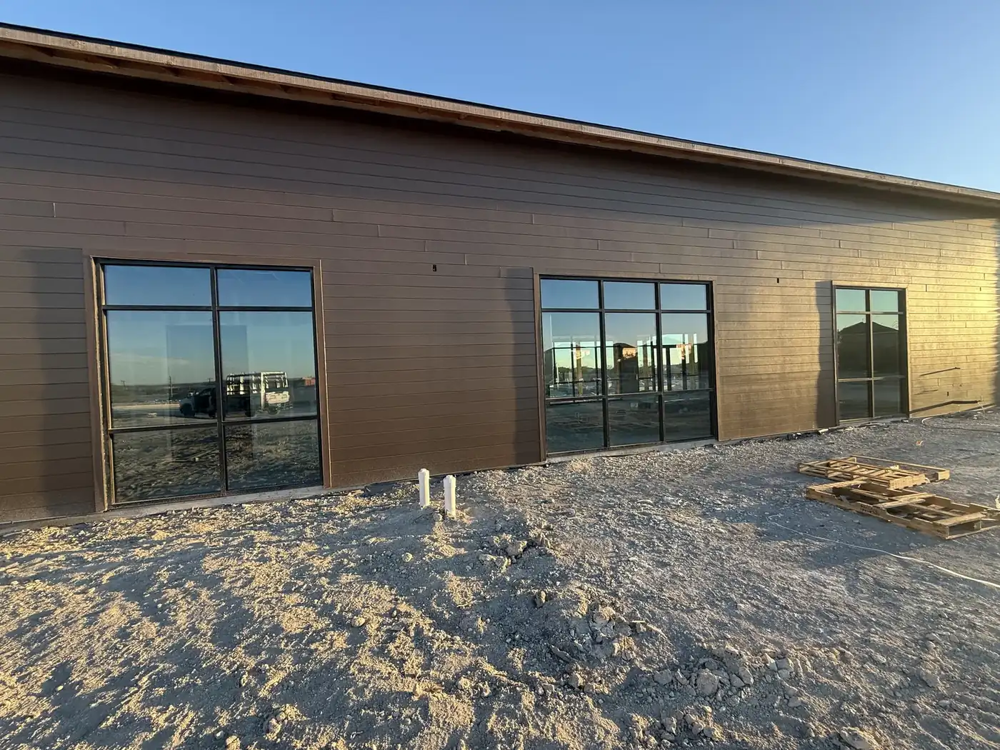

COMMERCIAL WINDOW TINT • SAN ANTONIO + BOERNE
Commercial Window Tinting in San Antonio & Boerne, TX
A west-facing glass wall in a South Texas summer is a heating element. Solar control film cuts the heat and glare coming through the glass you already have, without touching the glazing itself.
AT A GLANCE
What is commercial window tint?
Commercial window tint — properly, solar control film — is a thin coated film applied to existing glass to reject solar heat, cut glare and block effectively all UV. It is the cheapest way to change how a building handles the sun short of replacing the glazing.
We install on commercial and residential buildings only. We do not tint cars, trucks or any vehicle glass — that is a different trade with different film, different law and different tooling, and sending you to a building glazier for it would waste your afternoon.
Tell us about your projectHOW IT WORKS
Heat and daylight are not the same thing.
WHEN YOU MAY NEED THIS
Start here when…
- West or south elevations are cooking in the afternoon and the HVAC cannot keep up.
- Glare is making screens unreadable, or a retail display unviewable.
- Merchandise, flooring or artwork is fading from UV through the glass.
- You want a more uniform exterior appearance across a mixed or patched facade.
HOW IT WORKS
A clearer next step.
- 01
Share the essentials
Tell us the building, which elevations are the problem, roughly how much glass, and whether the issue is heat, glare, fading or appearance. Those point at different films.
- 02
Align on the film
Visible light, heat rejection and reflectivity trade against each other — you cannot max all three. We will tell you which one you are actually buying and what it costs the others.
- 03
Install around occupancy
Film goes on the interior face, so work is scheduled around how the building is used rather than closing it.
COST
ESTIMATE CONTEXT
What influences the investment?
Tint cost tracks the film grade and the difficulty of reaching the glass far more than the square footage. A ground-floor storefront run and a fourth-floor curtain wall are not the same job.
Film type, total area, working height, the number of separate panes, and the existing glass make-up all matter. Photos of the elevations and a rough pane count make the first conversation a real one.
Request a tailored quoteFAQ
Service questions, answered directly.
These answers provide a fast starting point before you reach out.
See every questionDo you tint car windows?+
No. Master Glass Solutions is an architectural glass contractor and works on buildings only. We do not tint cars, trucks, windshields or any vehicle glass, and we do not offer mobile auto service. For a vehicle you want an auto tint shop, not us.
Will window film make the offices dark?+
Not necessarily. Spectrally selective films reject a large share of solar heat while passing most of the visible light, so a space can get substantially cooler without getting noticeably dimmer. Darker and more reflective films reject more heat for less money — the trade is appearance and daylight, which is a decision worth making deliberately rather than discovering afterwards.
Can window film crack my glass?+
It can, and it is worth understanding before you buy. Film changes how a pane absorbs solar energy, and on some combinations — particularly annealed glass in certain sizes, or units already carrying a flaw or an edge chip — that raises the risk of thermal stress fracture. Matching the film to the glass make-up is the part that prevents it, which is why we ask what the existing glazing is before quoting.
MASTER GLASS SOLUTIONS
Let’s get the sun under control.
Tell us which elevations are the problem and roughly how much glass is involved. Buildings only — for vehicle glass, an auto tint shop is the right call.